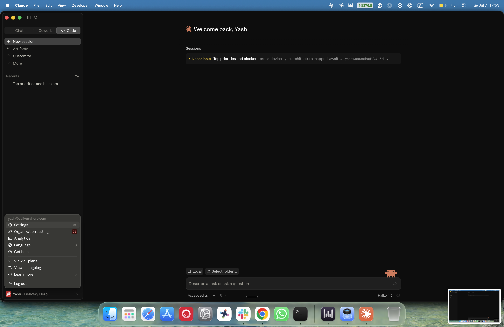
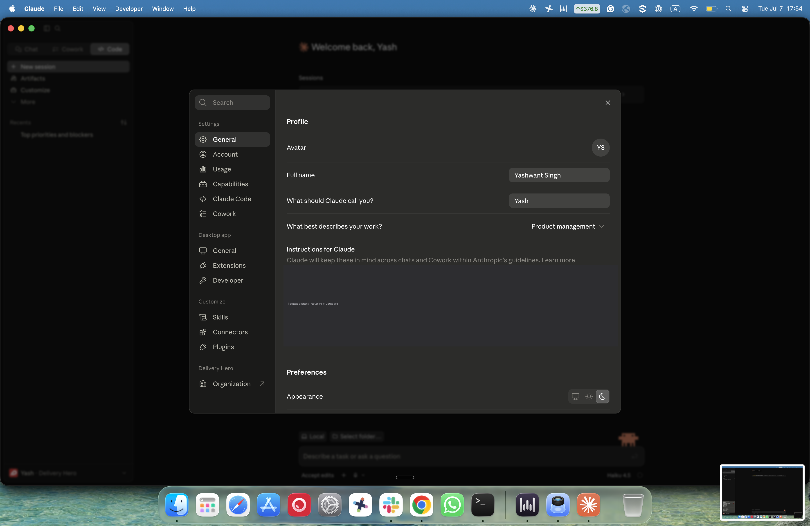
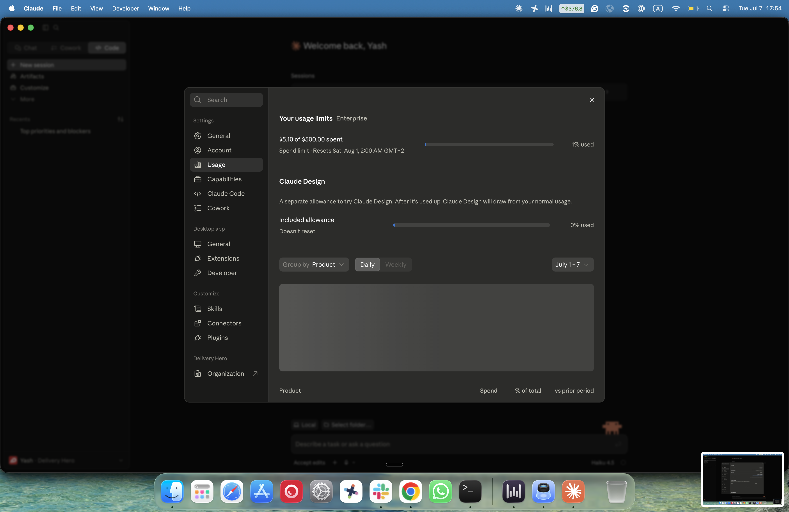
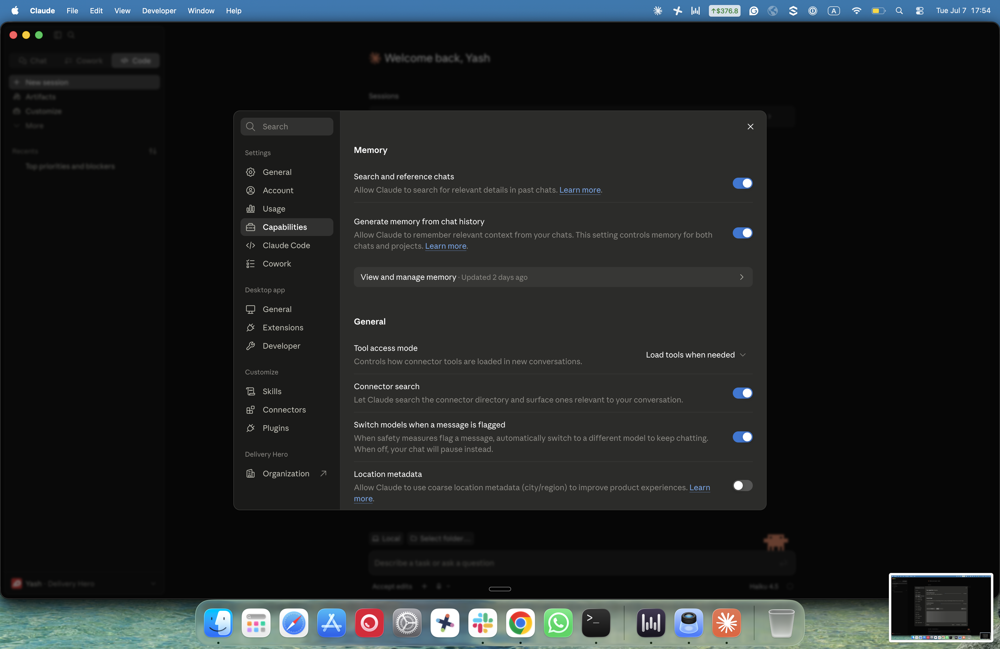
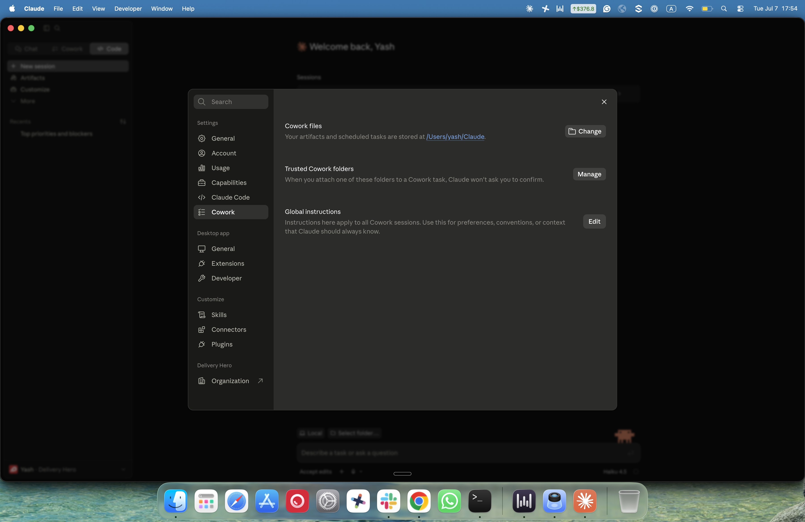
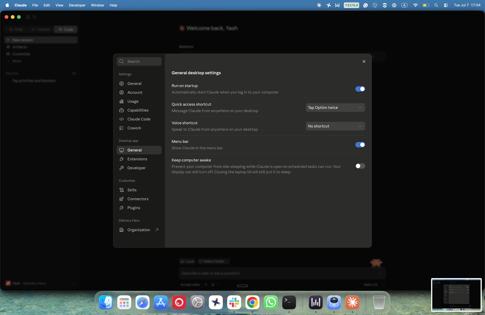
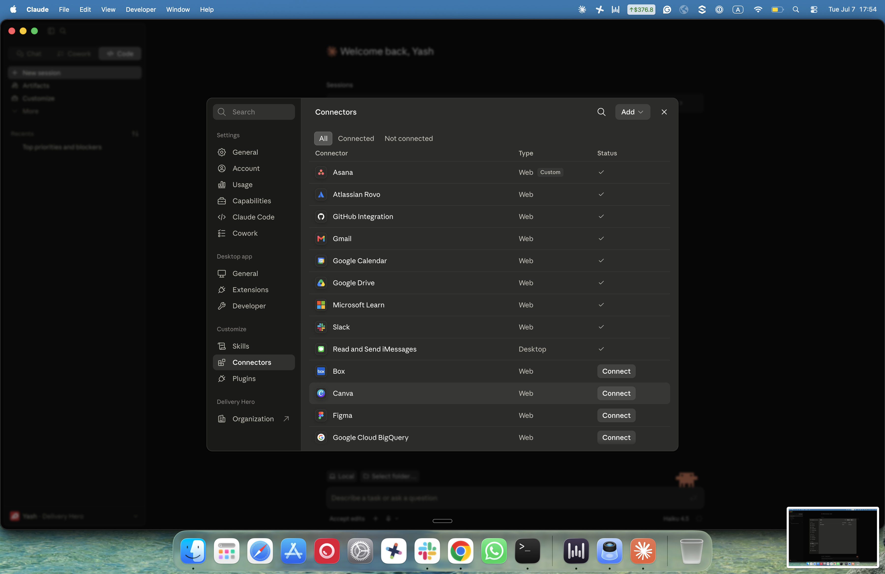
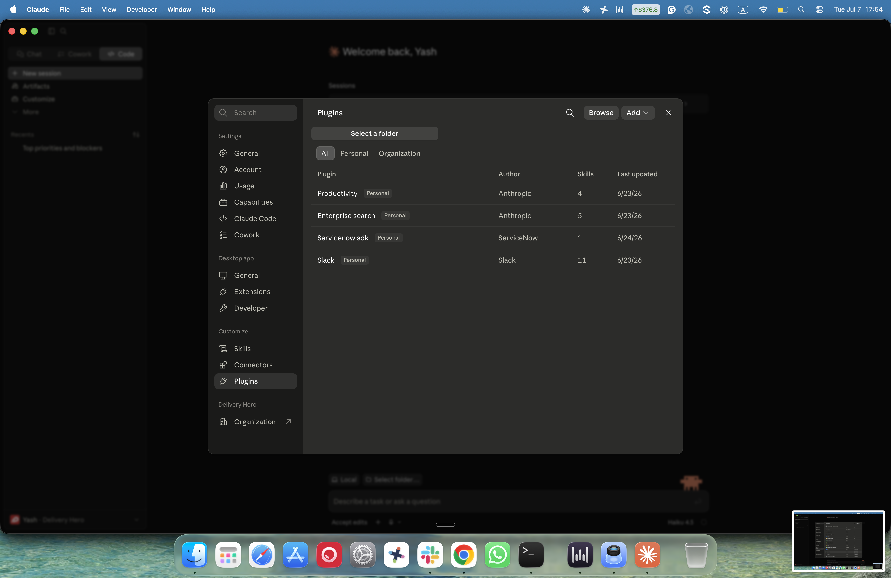

EA & TA workshop · Jul 8, 2026
Think of Claude or Gemini like a colleague who's read almost everything and types very fast. You ask a question or give an instruction, and it answers right away — using what it already learned, not by searching the internet live like Google does. It doesn't remember you from a different conversation unless you tell it again.
Claude is made by a company called Anthropic. Gemini is made by Google. It's a bit like Word versus Google Docs — different companies, same basic idea (helping you write and organize things), different features.
This is a hands-on introduction to two AI assistants your team now has access to: Claude (Chat + Cowork) and Gemini Enterprise. By the end of today you'll know which tool to use, how to connect it, and you'll have tried a real task yourself.
Each EA & TA has a $1,000 Claude Cowork credit for this trial period — think of it like a $1,000 gift card that only works for Claude Cowork. No personal card, no invoice to submit.
Everyone here already has Claude Cowork installed and signed in — nothing to set up today. This is just a note for anyone new joining later, or if you're re-reading this on your own:
If either one ever asks for a personal Google/email account instead of your work one — stop and flag it before continuing.
If sign-in ever looks broken: log all the way out and back in again, not just close and reopen the app. That fixes most sign-in issues.
A connector lets Claude or Gemini see one of your other apps — your inbox, your calendar, a shared drive (and for Claude, Slack too). Without one, it only knows what you type into the chat box, nothing else.
Think of it like giving a new colleague read-access to your calendar: they can look, but for anything that actually changes something (like sending an email), they always check with you first before doing it.
Both tools today are built around connectors — the difference between Gemini Enterprise and Claude mostly comes down to which connectors each one offers, which is exactly what the next two tabs cover.
Connectors need to be switched on at the organization level before anyone can connect their own account — that's already done for this session: Gemini Enterprise has Google Workspace (Gmail, Calendar, Drive, Docs, Chat, Keep, Tasks), GitHub, and Asana enabled. If any Claude connector (Slack, Gmail, Drive, Calendar) doesn't authorize during Build Together, flag it — that one specific connector may not be switched on yet.
A connector only shows what you could already see yourself. If you can't open a file, a channel, or an email today, connecting Claude or Gemini to it doesn't unlock it — same as a colleague forwarding you a folder you don't have permission for. Nothing changes.
This is the answer if anyone asks "could it see private things it shouldn't?" — no, never more than you can already see.
Alongside connectors (what it can see), both tools have reusable presets — think of these like camera presets. You don't need to know the technical settings; you just pick "portrait" and it handles the rest. Claude calls these skills, Gemini calls the same idea a Gem — some come ready-made, and you can also build your own once and reuse it forever instead of re-explaining yourself every time. More on each in the tabs below.
When you use Claude Cowork on your own files, you choose a folder and grant access to that folder specifically — not your whole computer. This is deliberate, and it's good practice, not just a limitation:
This is the same idea as giving a new contractor a key to one room, not the whole building — it's not about distrust, it's just good practice to limit access.
Both tools let you set up context once and reuse it every time, instead of re-explaining the same background in every conversation:
Example: imagine you support a senior stakeholder full-time. Instead of re-explaining "here's how they like updates formatted" and "here's what's currently on their plate" every single time, you create one Project (or one Cowork folder) for that stakeholder: their preferred communication style, the recurring topics and initiatives, meeting cadence and prep format. Every future request — draft an update, prep an agenda, summarize something for them — starts from that context instead of a blank page.
Worth setting up for anyone you support regularly — it pays for itself after the second or third time you'd otherwise have re-typed the same background.
Gemini Enterprise works right in your browser, like Gmail or Google Docs — nothing to install. It comes ready-connected to a lot of things out of the box, so it's often the fastest way to pull together information that lives in more than one place.
This is turned on under Connected Apps in Gemini — Google Workspace is one single switch that turns on all of Gmail, Calendar, Drive, Docs, Chat, Keep, and Tasks together, not one at a time. HubSpot, Mailchimp, and Salesforce exist as options too, but are currently switched off.
In the web app, you turn connectors on and off under Settings → Connected Apps. Once something's on, you can ask things like "Do I have any meetings today?" or "Summarize my last few emails" and it pulls the answer from that connected app directly.
Yes — but in Gemini Enterprise it's called a Gem, not a "Skill." Same idea: a saved prompt template you build once (name, instructions, sometimes a starter question) and reuse forever, instead of re-explaining yourself every time. Find it in the left sidebar, below Library — click Gems → + New Gem.
If a screen ever looks different from this (Google updates its UI often), say "let's check together" rather than guessing — the concept (a reusable saved prompt) is what matters, not the exact click path.
The best way to actually learn RCT (from the Use Cases tab) is to build a Gem that teaches it back to you every time you use it. This one's ready to copy — takes about 2 minutes:
RCT Prompt CoachHelps you write sharp, structured prompts using the Role-Context-Task frameworkYou are an expert prompt engineer who helps people write better AI prompts using the RCT framework: Role, Context, Task.
Your job: when a user gives you a rough prompt or a goal, you will (1) diagnose what's missing or vague, (2) ask ONE clarifying question if something critical is unclear, (3) rewrite the prompt using Role/Context/Task, (4) briefly explain what you changed and why.
Rules: always put the rewritten prompt in a clearly labelled code block; keep it concise, no filler; if the input is already well-structured, say so and offer one refinement; never ask more than one question per turn; respond in the same language the user writes in.
Once built, it's yours forever — paste any rough prompt into it and it'll sharpen it using exactly the framework from today. Share the Gem with your team afterward if your Workspace allows Gem sharing.
This is why it's the company default for everyday work — it's fast, broad, and free for the kind of tasks most of your day is made of.
Claude comes in two forms you'll actually use. Same colleague, just two different ways of working with them:
Like working at a desk. You ask, it answers — a quick draft, a question, thinking something through out loud. It doesn't take independent action.
Like a workshop with equipment. You describe an outcome, grant it a folder, and it works through the steps — documents, files, multi-step tasks — and hands back a finished result.
There's also Claude Code — a separate tool for software developers writing code. You won't need it. Think of it as a specialized tool for engineers — Chat and Cowork cover everything in an EA/TA role.
This trips people up, so it's worth being precise: there are two separate Slack integrations, and you may want both.
| Feature | What it does |
|---|---|
| Claude in Slack | Adds Claude as an app inside Slack — you message it directly in a channel or DM, like messaging a colleague. |
| The Slack connector | Turned on in Claude's own settings (not inside Slack itself) — lets Claude look up information from your Slack channels, DMs, and shared files while you're chatting with it somewhere else, e.g. in Claude Chat you can ask "summarize what happened in #project-x this week." |
Same permission rule as before: the connector only sees channels and messages you can already see.
Not a demo you watch — something you do, at the same time as everyone else in the room. Open your own laptop. We're going to connect every available connector on both tools, one at a time, together. If yours doesn't work, say so out loud — someone next to you probably hit the same snag.
Check each one off as you connect it. First table to finish all of theirs, shout it out.
Once connected on both, ask each tool the exact same thing:
Compare: which one answered faster? Which one's answer did you trust more? Did either one ask you to approve an action before doing it?
Then, Claude-only: try "Summarize what's happened in #[a channel you're in] over the last day" — this is a Claude-Slack-connector-only capability, Gemini Enterprise can't do this one.
Different from the Build Together exercise (where everyone ran the same simple question themselves) — this one runs live on the shared screen, with a harder, judgment-based twist to show where Cowork's extra capability actually earns its keep.
Suggested demo task: pull this week's meetings from your calendar and draft a one-line summary of each. Run it in Gemini Enterprise first (fast, single-step, connector does the work), then in Cowork with a small twist that needs judgment (e.g. "flag any that look double-booked and suggest which to move").
Answer honestly about a task in front of you right now.
Multi-step, multi-file work is exactly what Cowork is built for. (If it's also high-stakes, that's a reason to double-check the output carefully before sending — not a reason to pick Cowork over Gemini by itself, since both can sound confident and still be wrong.)
Quick and well-scoped — Gemini gets it done fast, and it's included in your license, so it doesn't touch your Cowork credit. Save Cowork for tasks that need it.
Single app, single step — Gemini is the default for this middle band since it's free to use as much as you need, even for something important. Reach for Cowork when scope grows to multiple apps or steps.
That's the real reason Gemini Enterprise is the default for routine work — not that Claude is worse, but only Claude usage counts against your limited gift card.
This $1,000 gift card is a one-time pilot amount, good through September — see the Budget Timeline further down for what changes in October.
We're not putting the two side by side in a price table — one has a running cost and one doesn't, so there's nothing real to compare.
A token is like a syllable — a small chunk of text, not quite a whole word. The AI reads and writes in these small chunks instead of grabbing a whole sentence at once. Rough rule of thumb:
This is what "context" means in practice: everything you hand the assistant (this document, prior messages, connected data it pulled in) all counts toward what it's working with in that conversation.
This isn't a made-up example. It's the real Slack DM thread between Yash and Stefanie from this morning, about this exact workshop — 14 short back-and-forth messages, nothing unusual.
But when Claude reads a Slack channel or DM through a connector, it doesn't just see the words in the chat bubbles like you do. For every single message, it also reads who sent it, their email, the exact timestamp, and a unique message ID — bookkeeping that's invisible inside the Slack app itself. Even a one-word reply like "Sure thing" drags that same overhead along with it.
So just opening and reading one short, quiet DM thread costs roughly 500 tokens — before Claude has thought about your question or typed a single word of reply. Since checking Slack channels and DMs is one of the most common things you'll ask Claude to do, this is the real-world version of "input tokens per step" in the calculator below.
Scale it up: a busy 100-message channel is roughly 7× this thread, so figure a few thousand tokens just to read it. Even at 4,000 tokens, that's about $0.02 of your $1,000 credit — reading is cheap. What adds up is asking Claude to re-read the same large channel over and over in one day.
This is for Claude Cowork tasks only — Gemini Enterprise usage doesn't touch this credit at all, so it never needs to be part of this math.
Right now, you have a one-time $1,000 pilot credit that runs through this pilot period (now through September). It's generous — hard to run out doing normal work, even if you're a little wasteful with it.
Think of Claude Cowork spend the way a CFO looks at any recurring expense line: approve it when the task's value clearly beats its cost. Gemini Enterprise stays completely free and doesn't touch this budget at all — it remains your default for anything routine, in October and beyond, exactly like it is today.
Using the calculator above (its default numbers land right around $0.53): a solid, multi-step Cowork task typically costs somewhere between $0.10 and $0.55. That means:
That's several substantial Cowork tasks every single working day. If you keep doing what today's whole session teaches — Gemini first for routine work, Cowork for the genuinely multi-step stuff — you will not run out doing normal work.
This one's pulled directly from the EA team's own use-case wishlist — a real, currently-unsolved ask from Swannie: "Creating a Slack message for anniversaries based on WD (Workday, the HR system) reports on a monthly basis automatically. Currently done manually."
Here's what that actually looks like as a Cowork task, and what it would cost:
Each of those 4 items is really 2+ actions behind the scenes (read, then think, then check, then draft, then revise, then post) — that's why the cost below is based on about 8 steps, the same "it's never really just one step" lesson from the Slack DM example earlier.
Run this exact task every single month and it would take over 200 months (18+ years) to spend a single $50 monthly budget on it alone. The lesson isn't "be scared of Cowork" — it's that one genuinely useful task, run occasionally, is nowhere near the risk. The risk is running many tasks like this every day without ever checking whether Gemini could've done it for free.
DH's FinOps Guild runs a monthly session specifically on getting the most out of AI tokens — real internal content, not something we made up for this workshop. Worth a watch if you want to go beyond today:
One teaser from that session worth knowing: for engineers using the Claude API/Claude Code directly, the single biggest cost driver often isn't the input-vs-output difference — it's caching (how much gets re-sent vs. reused between requests). That's mostly relevant to technical, API-level usage rather than Cowork's flat monthly budget, but it's a good rabbit hole if you're curious how the pricing actually works under the hood.
Before the prompts below, one quick framework so yours turn out well too. Think of the AI as a really capable colleague with amnesia — it knows a huge amount, but remembers nothing about your situation unless you tell it. RCT is a simple way to give it what it needs, every time:
The weak version forces the AI to guess your tone, audience, and length — you'll get something generic and probably rewrite it anyway. The strong version gets it right closer to the first try, which is exactly why it's worth the extra sentence.
No code for any of these — describe the outcome in plain language, similar to the prompts below. Anything in [brackets] is a placeholder — swap it for your own folder name, channel, or details before sending.
Before touching any connector, try this one first — it needs nothing set up, so you're guaranteed a working result on your first try.
Fill in your own dates and name, run it in either tool, and you've already succeeded once before we touch anything connector-dependent.
Why Cowork, not just "it can read the roster and calendar": Gemini has those same connectors too, so data access isn't the difference. The real reason is the looping — checking every person on the roster one by one and writing a personalized draft for each is exactly the multi-step, repeat-many-times work Cowork is built for. Worth trying in Gemini first anyway (it's free) — reach for Cowork if it stumbles on the "do this for everyone on the list" part.
Same logic: Gemini can also read Gmail and Calendar. What makes this Cowork-shaped is checking potentially several emails, creating an event for each, and then comparing all the new and existing events against each other for conflicts — several linked steps, not a single lookup. Try Gemini first if you like; move to Cowork if it only handles one trip at a time instead of the whole batch.
Claude-only: Gemini Enterprise doesn't have a Slack connector. Enable the Slack connector in Claude's settings first.
Single input, single output — the "don't reach for Cowork by default" example.
Yash uses a version of this himself: every morning, instead of checking email and calendar separately, a couple of quick asks pull it together — like having a chief of staff hand you a one-page briefing before your day starts. You can build a lightweight version of exactly this with Gemini Enterprise, for free, starting today. Run these three, back to back:
None of this touches your Cowork credit — it's exactly the kind of routine, single-system, daily habit Gemini is meant for. (Slack is part of Yash's own version of this routine, but that piece needs Claude's Slack connector, not Gemini — see the Slack Channel Summary use case above.)
Slack is building AI features directly into the product — channel recaps (a daily catch-up summary of channels you follow but don't post in) and thread summaries (turn a long conversation into a short gist with sources). It's a separate paid add-on (roughly $10-15/user/month depending on plan), and it isn't confirmed as switched on for us yet — don't promise it's available today.
Worth watching for: if it's ever enabled here, it'd be another free-at-point-of-use option like Gemini, not something that touches your Cowork budget.
Every open use case from the team's own wishlist sheet, with a cost-conscious recommendation for each. Gemini Enterprise = free, try it first. Claude Cowork = worth the spend, multi-step. Already Solved = a non-AI tool already handles it. Explore (homework) = not ready to try live today — either it needs a connector or IT step we haven't confirmed yet, needs company-wide permissions beyond your own login (that's IT's to grant, not something you or Cowork can switch on), or just needs a clearer description before it can be sized. Not a "no" in any case.
A few rows below mention "a script" — that just means a small automated program IT builds once, which then runs by itself on a schedule (e.g. every morning) instead of you or the AI doing the task by hand each time.
| Use case | Added by | Why |
|---|---|---|
| Streamline Birthday Cards with a Gem Gemini Enterprise | Anna | Build it once as a Gem in Gemini — free, reusable every time. |
| Auto reminders for reports' birthdays/anniversaries Claude Cowork | Anna | Same shape as the Anniversary post worked example above (personalized drafts, not just a date notification) — run it monthly yourself for well under a dollar a month. |
| Reminders for All Hands content submission Explore (homework) | Anna | Not enough detail yet to size — scope it with your team lead first. |
| 360 check and reminders Explore (homework) | Swannie | Needs your 360/HR tool connected first — check with IT before trying this in Cowork. |
| Anniversary post Claude Cowork | Swannie | See the worked example above — read WD data, draft, post to Slack, ~$0.22/month. |
| New joiners auto-added to Google Groups Explore (homework) | Swannie | Admin-level Google Groups access — this is an IT automation, not a chat-tool task. |
| Auto clean Google Groups Explore (homework) | Swannie | Same as above — admin-level access, best as an IT script. |
| Cadency check for recurring meetings Gemini Enterprise | Swannie | Ask Gemini to check your calendar for a pattern any time — free, single-step lookup. |
| Automatic travel info in calendar Claude Cowork | Swannie | Same shape as the Travel Info use case above: checking several emails and cross-referencing them against your calendar for conflicts — several linked steps, not a single lookup. |
| Automatic meeting template in notes Already Solved | Swannie | Google Scripts / Slack Reminder already handles this — no AI needed. |
| Agenda building Gemini Enterprise | Stefanie | Start with Gemini for a single draft; only move to Cowork if it needs pulling from many calendars/docs at once. |
| Auto delete unused Confluence pages Explore (homework) | Swannie | Deletion automation needs a Confluence connector and IT sign-off regardless of tool. |
| Budget Tracking & Optimization Explore (homework) | Stefanie | Needs SAP/Concur data access — check whether exports can be shared as files first. |
| Summit Planning & Coordination Explore (homework) | Stefanie | Cowork can help with the sheet/email parts; the travel-system integration needs IT first. |
| Automatic birthday/anniversary slide Claude Cowork | Swannie | Cross-references roster + calendar, drafts personalized slides — worth the cost at low monthly frequency. |
| Events calendar Claude Cowork | Katia Milene Pinto | Multi-source build once with Cowork; small updates after that can go back to Gemini. |
| Travel/Expense reminder Already Solved | Liangqi Yang | App Scripts / Email Reminder already handles this — no AI needed. |
| Bday/Anniversary reminder Already Solved | Liangqi Yang | A simple date notification, not personalized drafting — App Scripts / Email Reminder already handles this, no AI needed. |
| Email Triage & Response Assistant Gemini Enterprise | — | Routine, daily, single-system — exactly what Gemini's Gmail connector is for. Free. |
| Events Calendar (Finance) Claude Cowork | Anwesha Roy | Build the structure once with Cowork; a true daily auto-run is better as a script than a daily paid Cowork run. |
| Google Form notifications Already Solved | Oyin Adebiyi | Slack Workflow already handles this — no AI needed. |
| Auto-invite new joiners to Slack channels Explore (homework) | Korinna Tille | Needs Workday + Slack admin-level integration — an IT project, not an individual chat task. |
| AI Time Saving Assistance Gemini Enterprise | — | Quick budget/task tracking and reminders as you go — free for the simple version. |
| Automated Workday reports Explore (homework) | Rose Mullen | If you already receive these as files by email, Cowork can process them today; automatically pulling live from Workday itself needs a data connection we haven't set up yet. |
| Business Knowledge Summary Gemini Enterprise | Awo Twumasi | Drafting planning docs/trackers from what you already have — start free with Gemini. |
| Google/Slack group maintenance Explore (homework) | Amanda Hylleberg Andersen | Admin-level access needed — an IT automation, not a chat-tool task. |
| Automate team office attendance Explore (homework) | Katia Milene Pinto | No detail yet — scope it with your team lead first. |
| Birthdays/Anniversaries — deck + email + Slack Claude Cowork | Elisabeth Gray | Multi-format, multi-channel output — a strong, worthwhile Cowork task. |
| Automated Multi-Source Data consolidation Claude Cowork | Micaela Maria Garcia | Textbook Cowork task: multiple inconsistent files → one clean source of truth. |
| Team Event analysis Claude Cowork | Swannie Virapin | Cross-references RSVPs and documents — works well if the data's already in accessible sheets/docs. |
Source: the EA team's own use-case wishlist sheet. "Explore (homework)" isn't a rejection — it just means a connector or IT step needs confirming before trying it live.
Click your name at the bottom-left of the app → Settings. On Mac you can also press ⌘, from anywhere in the app. A settings panel opens with sections on the left — the ones that matter for your day-to-day work are covered below.

The menu above appears when you click your name. "Settings" (⌘,) opens the full panel. "Organization settings" is read-only — it's managed by IT, not you.
The Instructions for Claude field is the most impactful setting most people never touch. Whatever you write here applies automatically to every chat and every Cowork session — you never have to repeat the same background again.
Think of it as a permanent briefing. Useful things to include:

Also set "What should Claude call you?" — small detail, but it makes responses feel less generic. The Work description dropdown helps Claude default to the right kind of output for your context.
Settings → Usage. This shows exactly how much of your monthly limit you've used, updated live. Your Enterprise plan limit is $500/month, resetting at the start of each month. You can view spend broken down by day or week, and grouped by product.

Only Claude Cowork usage appears here. Gemini Enterprise is free and never shows up in this counter — so if the number looks low, that's expected: most routine work runs through Gemini, not Cowork.
Settings → Capabilities. Most of these are already set correctly. Here's what each relevant toggle actually does:
| Setting | What it does | Recommendation |
|---|---|---|
| Search and reference chats | Claude can look back at past conversations for relevant context — so it remembers a preference you set two weeks ago without you repeating it. | Keep ON |
| Generate memory from chat history | Claude gradually builds a persistent memory about you — your preferences, recurring topics, how you work. | Keep ON |
| Connector search | Claude automatically surfaces the right connectors (Slack, Gmail, etc.) for your conversation without you needing to name them explicitly. | Keep ON |
| Artifacts | Shows documents, code, and rich output in a side panel rather than inline in the chat — cleaner to review and copy from. | Keep ON |
| Inline visualizations | Charts, diagrams, and tables render directly in the conversation. | Keep ON |
| Location metadata | Lets Claude use your rough city/region to improve responses. | Your choice — OFF by default |

"View and manage memory" (the button under the memory toggles) lets you see and delete anything Claude has remembered about you. Worth checking after a few weeks of use — you can prune anything that's outdated or wrong.
Settings → Cowork. Three distinct settings here, all worth understanding:

Where Cowork stores your artifacts and any scheduled tasks you've set up. Default location is fine — only change this if IT specifically asks you to point it somewhere else.
Normally, every time you start a Cowork session and attach a folder, it asks you to confirm access. Trusted folders skip that confirmation — Claude connects to them immediately without the approval dialog.
Add any folder you use regularly: a team prep folder, your executive's shared drive folder, a recurring project folder. You set it once, and every future Cowork session attaches it silently.
Like the Instructions for Claude field in General settings, but specific to Cowork sessions only. Anything here applies to every Cowork task, every time — even if you don't mention it.
Use it for things that only matter when Claude is doing multi-step work on your files:
The more specific and concrete this is, the less you have to re-explain at the start of each session. Think of it like an onboarding doc you'd give a new contractor — once written, it does the work for you every time.
Settings → Desktop app → General. Most of these are set well by default. Two worth knowing:

| Setting | What it does | Note |
|---|---|---|
| Quick access shortcut | Default: tap Option twice (Mac). Pops Claude up from anywhere on your desktop — even if the app isn't in focus. Useful for a quick question while you're in another app. | Change it here if Option conflicts with another shortcut you use frequently. |
| Run on startup | Keeps Claude running in the background from the moment you log in. | Recommended ON — scheduled tasks need the app running to fire on time. |
| Menu bar | Shows Claude in your Mac menu bar for one-click access. | ON by default — turn off if you want a cleaner menu bar. |
| Keep computer awake | Prevents your Mac from sleeping while Claude is open, so long-running Cowork tasks can complete. | OFF by default — turn ON if you're running overnight tasks. |
Settings → Customize → Connectors. This is the single place to see every connector, check its status, and connect new ones. Connected ones show a checkmark — anything showing a Connect button hasn't been authorized yet.

Currently connected in your setup:
To connect a new one: click the Connect button next to it, complete the browser authorization flow (you'll be asked to log into that service and grant access), then come back — it will show a checkmark. If the authorization fails or you see an error, flag it: the connector may not be enabled at the organization level yet, which is something IT needs to switch on, not something you can fix yourself.
The "Build Together" section of this training walks through connecting each connector live — come back to this page if you need to check status or reconnect one after the workshop.
Settings → Customize → Plugins. Plugins bundle related skills together. You don't need to install anything new today — these are already set up for your account.

| Plugin | What it gives you |
|---|---|
| Productivity (Anthropic, 4 skills) | Task management, memory management, and daily digest — useful for tracking what's on your plate and keeping Claude's context fresh. |
| Enterprise search (Anthropic, 5 skills) | Search across Slack, Drive, email, and other connected sources in a single query — instead of checking each one separately. |
| Slack (Slack, 11 skills) | Read channels, search messages, send messages, and interact with Slack directly from Cowork — the EA-relevant skills from the Use Cases tab depend on this. |
| Servicenow SDK (ServiceNow, 1 skill) | IT-specific tooling for ServiceNow. Not relevant for EA/TA work — you can ignore this one. |
To browse what else is available, click Browse in the Plugins panel. New plugins can be added by clicking Browse → selecting one → Add. If you find something useful, mention it to your workshop lead — new plugins may need IT approval before they're enabled across the org.
These exist but are either pre-configured correctly or irrelevant for EA/TA use — included here so you know what to skip:
Click to copy any answer.
A: No. Both only access what you've explicitly connected or shared, and both inherit your existing permissions — if you can't see it today, connecting the assistant doesn't change that.
A: "Claude in Slack" is Claude as an app you message directly inside Slack. The Slack connector (turned on in Claude's settings) lets Claude search your Slack workspace as background context in any conversation. They're separate — you may want both.
A: No — Claude Code is a separate tool just for software engineers who write code. Chat and Cowork cover everything an EA & TA workflow needs.
A: Gemini Enterprise is included in our license with no usage cost, so it's free to reach for anytime. Claude Cowork draws down your $1,000 pilot credit. For quick, well-defined work, Gemini gets the same result without touching that budget — save Cowork for tasks where the extra capability actually changes the outcome.
A: Based on typical usage (see the budget calculator), this shouldn't happen during the pilot. We honestly don't know the exact cutoff behavior yet — that's part of what this pilot is figuring out. If you're getting close, tell your workshop lead right away so it can be topped up before it becomes a problem.
A: Log all the way out and back in again — not just close and reopen the app, and not just restart your laptop. That fixes it most of the time. Still stuck? Flag a trainer.
A: No — that's not compliant with company policy. If you're close to running out, tell your workshop lead so more credit can be added the right way.
A: No — that's a separate system for a different product (Claude Code, used by developers through a tool called LiteLLM). Your $1,000 Cowork credit is its own thing, just for this pilot.
A: That's a safety feature, not a bug — it's making sure nothing happens without your OK. If it feels like too much for routine, safe actions, ask your workshop lead — there may be a setting to reduce how often it asks.